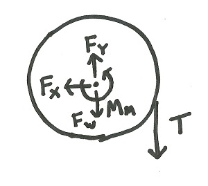

Free Body Diagram

A free body diagram is a tool used to solve engineering mechanics problems. As the name indicates, the point of the diagram is to "free" the body being analyzed from all other objects and surfaces so that the forces and moments acting directly on that body can be analyzed. The diagram above shows a ladder and the free body diagram of that ladder. As you can see, the ladder is separated from all other objects and all forces acting on the ladder are drawn in.
To draw a free body diagram:
- First draw the body being analyzed. Only draw in the body being analyzed, do not draw any other bodies or surfaces.
- Second, draw in all forces and moments acting directly on the body. Only include forces and moments that are directly applied to the body, do not include forces acting on other bodies. Some types of forces to look for are:
- Gravitational Forces: Unless otherwise noted, the mass of an object will result in a weight force applied to the center of mass of the body.
- Normal Forces: Every object in direct contact with the body will exert a normal force on that body which prevents the two objects from occupying the same space at the same time. Note that only objects in direct contact can exert normal forces on the body. Joints or bearings connecting the body to other objects will also exert normal forces on the body.
- Friction Forces: Objects in direct contact with the body can exert friction forces on the body, which will resist the two bodies sliding against one another.
- Tension in Cables: Cables, wires or ropes attached to the body will exert a tension force on the body in the direction of the cable.
- The above forces are the most common, but other forces such as pressure from fluids, spring forces and magnetic forces may exist and may act on the body.
Worked Problems
Draw a free body diagram for each of the objects below
Worked Problem 1:
Two boxes are stacked on top of the construction scaffold. Draw the free body diagram for the plank on top of this scaffold structure that is outlined in red.
|
Free Body Diagram
|
Comments |
|
The plank has four total forces acting on it. A gravitational force (Fw) acts on the center of mass. A normal force is exerted upward by the support columns on either side (Fs1 and Fs2) where the supports contact the plank. A normal force is exerted downward by box 1 where the box is in contact with the plank. |
Worked Problem 2:
A truck is towing a camper trailer along the highway. Draw the free body diagram for the trailer. Assume that the connection between the truck and the trailer is a ball and socket joint.
|
Free Body Diagram
|
Comments |
|
The trailer has five total forces acting on it. The weight of the trailer (Fw) acts downward on the center of mass. A normal force from the road acts upwards through the tires of the trailer (Fr). Normal forces in the X and Y direction are exerted on the trailer through the ball and socket connection to the truck (Ftx and Fty). Finally, fluid friction force (drag) acts on the trailer resisting the forward motion of the trailer (Fd). The placement of the fluid friction force cannot be determined without further information so the placement of Fd is a best guess. |
Worked Problem 3:
An electric motor is connected to a spool that is slowly winding up a cable with a mass at the end (B1). Draw the free body diagram for the spool. Assume that the spool is anchored with frictionless journal bearings.
|
Free Body Diagram
|
Comments |
|  |
The spool will have four forces and a moment acting upon it. The weight of the spool (Fw) acts downward on the center of mass. The journal bearing exerts normal forces in the X and Y directions (Fx and Fy). The tension in the cable exerts a downward force on the spool (T). The electric motor exerts a moment on the spool in a direction that would wind the cable up (Mm). |
 |
| Author: Jacob Moore has liscenced this work under a Creative Commons Attribution-NonCommercial 3.0 Unported License. |